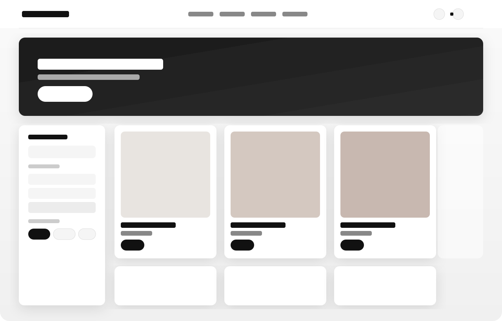
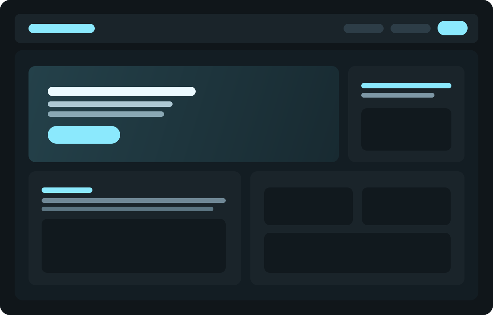
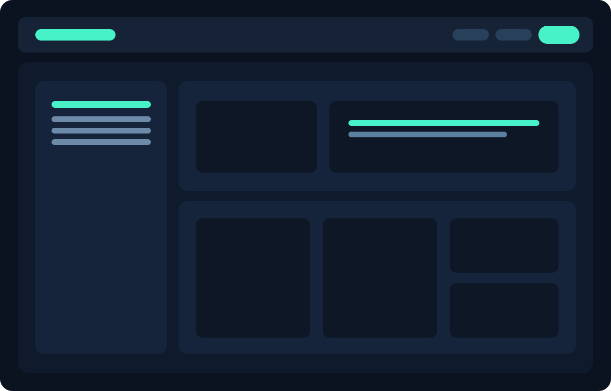

Каталог
Фільтри, сортування та швидка навігація по категоріях.
Інтернет-магазин із повною eCommerce логікою: категорії, фільтрація, картки товарів, кошик, checkout та інтеграція платіжних сценаріїв.



Фільтри, сортування та швидка навігація по категоріях.
Галерея, характеристики, варіанти та блок «з цим купують».
Простий процес покупки в 3 кроки без зайвих полів.
Побудуємо eCommerce-проєкт з правильним UX та логікою продажів.
Отримати розрахунок